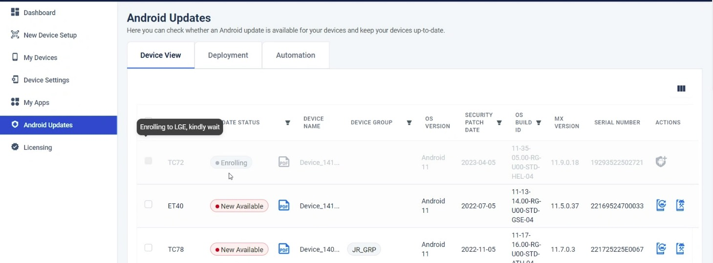
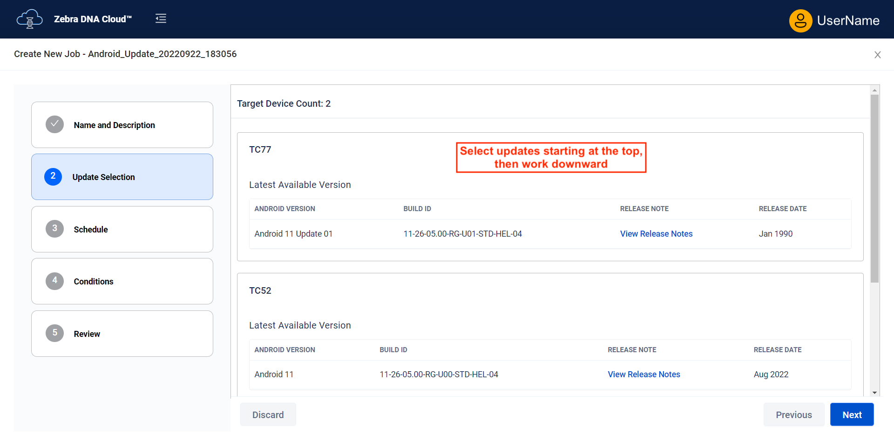
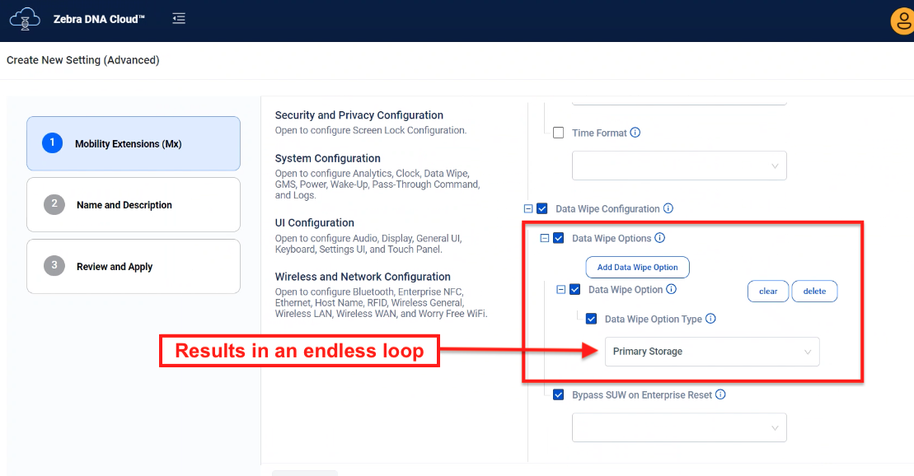
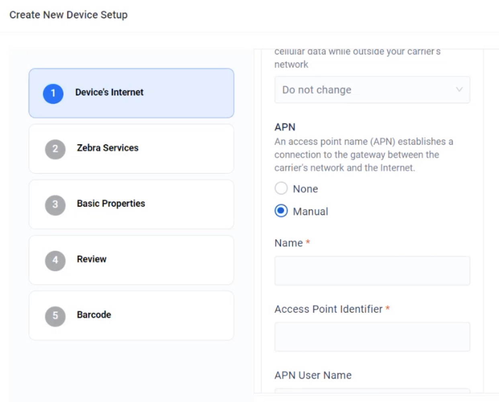
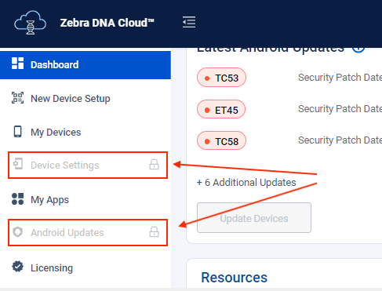

LAST UPDATED: Jan. 14, 2025
Common Questions and Known Issues
This section contains frequently asked questions and known issues of current and previous releases.
For help using Zebra DNA Cloud (ZDNA) or to report an issue, please contact Zebra support.
App Deployment
Q: Why does Google report an error when I try to deploy an app from My Collection?
Due to API changes in Google Drive, My Collection app deployment from a Google Drive no longer functions as before. Until further notice, Zebra recommends deploying My Collection apps using the "Specified Server" method.
Q: Why are my managed configurations sent to an app through DNA Cloud failing to be applied?
For successful application of managed configurations from DNA Cloud, the targeted app on device(s) must NOT be NEWER (with a greater version number) than the corresponding app currently offered in the ZDNA App Collection. When this issues arises, it's usually in organizations installing apps through a third-party EMM or directly to devices using ADB, where the likelihood of an app-version mismatch is higher.
Q: Why are there duplicate or missing managed configuration values in my setup Profile?
Deploying a managed configuration (MC) generated from a newer version of a third-party app schema can cause duplicate or missing MC values to be displayed in the "Review" and "Apply" pages of a setup Profile of an older version of the app.
Enrollment
Q: Why can't I scan the ZDNA enrollment barcode from the screen?
The ability to scan a barcode displayed on a monitor is subject to a number of factors. If you're unable to scan a barcode from the screen, try these changes to the display parameters:
- Increase the screen brightness
- Increase or decrease the display resolution
- Increase the browser magnification (to enlarge the barcode)
Q: Why did the device fail to enroll after scanning the enrollment barcode?
Enrollment failure sometimes occurs if network connectivity is down or the ZDNA server is temporarily unavailable when the barcode is scanned.
As a remedy, use a network diagnostics tool (i.e. Ping) to verify internet connectivity and availability of the ZDNA server and scan again. If still enrollment fails, generate a new barcode and try scanning again.
If enrollment continues to fail, one of the following might be at fault:
- The Wi-Fi section of the enrollment Profile contains an invalid setting
- The device is already in Device Owner mode
- The LifeGuard Over-the-Air service is not installed or not running
- GMS services are disabled or not present
Q: After trying to enroll, why are the devices "greyed out" with an "Enrolling" status label?

Click image to enlarge; ESC to exit.
Though rare, this issue can occur if the Enrollment Manager or a download or install step fails during enrollment. Device status changes to "Not Enrolled" after an extended period of time, possibly as many as five days. To clear the status immediately and attempt re-enrollment, perform an Enterprise Reset on the device(s).
Q: Why are some features unavailable on my enrolled device(s)?
Devices intended to be fully managed using Zebra DNA Cloud must perform a factory reset before enrollment into the system to ensure that all features work correctly. This requirement is not applicable to devices managed using a third-party EMM solution and that use ZDNA to deploy Zebra apps and OS updates, monitor battery health and perform other administrative functions.
Q: Why are my Android Update selections being overwritten?

Click image to enlarge; ESC to exit.
When setting up an Android Update for multiple device models, it's important to select the desired updates starting from the top of the device list and work downward toward the bottom. If an update is selected for a device that's lower in the list before selections are made for the ones above it, that update is applied to all devices in the list, overwriting any selections made later. Zebra engineers are working on a remedy for this anomaly.
Q: Why do some applied Profiles continue to display "In-Progress" status?
Certain conditions cause the status of a deployment to remain "In-Progress" for extended periods. This includes deployment of managed configurations targeting apps that have not implemented a feedback channel. In such scenarios, ZDNA updates the status to "Success" after 24 hours. Many such issues similarly resolve on their own; others require intervention. Some common scenarios are listed below.
Resolve on their own:
- Enrollment of devices running Android 13 (5-10 min.)
- Deployment of managed configurations to devices while offline or otherwise unresponsive (up to 24 hrs)
- Enrollment of devices with some older LifeGuard updates (times vary) Learn more
Intervention Required:
If the status of a Profile remains "In-Progress" for longer than 24 hours, a loop condition might exist in the Profile. If the selected option was "Primary Data" (see image, below), the status of that Profile will never reach "Success" because device data was erased before the ZDNA client app could report that the job had completed successfully. Re-enrolling the device perpetuates this endless loop.

Click image to enlarge; ESC to exit.
To resolve this issue, remove the Profile before re-enrolling effected devices.
Zebra recommends avoiding the "Data Wipe Option" for removing primary device data unless full erasure is the desired outcome. In such cases, data wipe should be the last Action in the Profile.
General Administration
Q: Why is there no longer a "Tenant Owner" in DNA Cloud?
With the introduction of User Roles in ZDNA 4.0, the persona formerly known as Tenant Owner became the "Admin" and all other users were labeled "Manager" in all server instances.
Since the former Tenant Owner has privileges above all other users, the Admin user is referred to in TechDocs as the "Super Admin" to differentiate it from those assigned the Admin Role. Such admin-assigned users are referred to simply as "Admins" in TechDocs.
Q: Why can't some new and/or factory-reset devices be managed after ZDNA enrollment?
Devices with a LifeGuard update PRIOR to August, 2023, were permitted to enroll after that update was released, but such devices lacked support for many ZDNA features. The issue of such "unsupported OSes" has been resolved, but enrollment barcodes must be created (or re-created) with ZDNA 3.5 (or later); ZDNA 3.4 (and earlier) does not contain the functionality required to resolve the issue.
To enroll such devices:
- Apply the Android 11 August, 2023, LifeGuard Update (or later).
- In ZDNA Android Updates section, select and apply “Update to the Latest” to apply the newest OS and patch versions.
ZDNA then performs one or both of the following actions, depending on device status:
• LifeGuard Over-the-Air enrollment
• DNA Cloud enrollment
PLEASE READ BEFORE PERFORMING THIS PROCESS:
- Device(s) must be licensed for DNA Cloud to complete this process.
- Enrollment barcodes must be created with ZDNA 3.5 (or later); earlier versions are not compatible.
- Devices still unsupported after undergoing this process appear in My Devices listings with limited capabilities.
Such devices also might be shown with a status of "In-Progress" for an indefinite period.
IMPORTANT:
Enrollment fails on SDM660-platform devices with BSP11-16-05.00-RG-Uxxif the setup Profile attempts to configure an access point name (APN) for connection to the internet for enrollment via cellular network.
As a workaround, Zebra recommends configuring device(s) to connect with Wi-Fi before enrollment.

Click image to enlarge; ESC to exit.
Q: Why do new administrative users have to use the "Forgot Password" feature?
 Click image to enlarge; ESC to exit.
Click image to enlarge; ESC to exit.
When creating new Admin Users, there's no field for entering their initial password. When first logging in, Admin Users MUST use the "Forgot Password?" function to set up a password.
Q: Why do all enrolled devices appear as "Not Supported" on the Android Updates page?
Q: Why am I no longer able to allocate licenses, regardless of the method (group affiliation, serial number, etc.)?
Q: Why are "Device Settings" and "Android Updates" sections unavailable after working previously?
Q: Why am I seeing "The token for LifeGuard enablement is expired or invalid. Please reauthorize on the My Services page." or similar message?

Click image to enlarge; ESC to exit.
Managers, Administrators and Super Admins (formerly Tenant Owners) might sometimes observe these behaviors due to concurrency or token expiration issues.
To resolve, the Super Admin (formerly Tenant Owner) must log out of DNA Cloud, log in again and if necessary, visit the My Services section to manually reauthorize the token.
Q: I just installed Android 13 on my device. Why isn't it manageable anymore?
When first booting (or rebooting from either a cold boot or hard reset), all Zebra devices running Android 13 (or later) must be unlocked (using PIN, password or pattern) before the ZDNA client app will launch and enable device management. This issue also applies to some 6490-platform devices running Android 11.
Q: Why do my older settings Profiles fail when applied to devices with Android 13?
Settings Profiles created with ZDNA 2.7 or earlier CANNOT target devices running Android 13 without modification. To update an older Profile for Android 13, locate the Profile in the Device Settings section and select the "Edit" Action (see below). No Profile changes are required; simply page through Profile screens and re-save to enable targeting of all supported Android platforms.

Q: Why are some devices shown with a warning symbol?
The icon appears next to devices that contain out-of-date ZDNA device software or were enrolled using a barcode created with an older version of the ZDNA console.
The remedy for either scenario is to select "Update ZDNA Client" for the affected devices.
Q: Why am I no longer able to edit settings in an existing Profile?
It's possible that the Super Admin (formerly Tenant Owner) made a change to a connected service being accessed the Profile, rendering the Profile "read-only" by Administrative Users.
To resolve this condition, the Super Admin (formerly Tenant Owner) must edit the Profile(s) so they contain the new connected service information. See My Services notes for more information.
Q: Why do I see a "Google Drive login required; configurable by Tenant Owner only" message?
If a Super Admin (formerly Tenant Owner) logs out of a connected service (such as Google Drive), all users are denied access to that service until the Super Admin logs in again.
Q: Why am I unable to remap the programmable keys on the Zebra Enterprise Keyboard?
When creating a managed configuration for Zebra's Enterprise Keyboard soft input panel, remapping its programmable keys currently requires two backslash ("\\") characters (rather than one, as documented). Zebra engineers are working on a fix for this known issue.
Q: Why does some UI text become misaligned?
 Click image to enlarge; ESC to exit.
Click image to enlarge; ESC to exit.
Resizing browser windows sometimes causes text to render incorrectly or appear out of alignment. This has no effect on entered data, and can be remedied by keeping windows at (or restoring them to) their original size.
Q: Why are errors displayed when I try to configure NFC settings?
Configuring NFC settings sometimes displays an error despite being applied properly on the device. Zebra engineers are working on a fix for this known issue.
Presence
Q: Why isn't presence information being displayed for my devices?
Presence information requires an update to network settings. After this change is made, device presence information is displayed in the ZDNA console according to the rules and behaviors listed under Presence Usage Notes in the My Devices section of the Usage Guide.
Remote RxLogger
Q: When inputting an FTP hosting address for Remote RxLogger, why is an error displayed?
Some special characters are NOT supported in the user-name and password sections of the FTP/S URL. More info.
Q: Is there more information about formatting the Hosting Location field for Remote RxLogger?
For more detailed instructions about formatting the Hosting Location field, see How to format an FTP/S server URL , an article posted by the Zebra Tech Support team.
Setup Wizard (SUW)
Adjustments in privacy policies mandated by Google have brought about an important change in the out-of-box setup process for all Zebra devices running Android. This change applies to all Android device manufacturers.
Q: What is changing with the Zebra device setup process?
Starting January 1, 2025, Zebra devices running Android 13 or later will no longer be able to bypass the Android Setup Wizard. Device staging requires manually processing all device-setup screens during the initial setup process.
Q: Which device(s) are impacted?
All Zebra devices with Android 13 are effected, regardless of whether Android 13 was present at the time of purchase or installed as an OS upgrade or LifeGuard update.
Q: Why are these changes being made?
The changes are required to comply with updates to Google privacy policies, which mandate that users manually accept or decline privacy terms during the setup process.
Q: What steps should I take to prepare for these changes?
To prepare, Zebra recommends testing the new process with the desired device image(s) within your existing workflows, including all steps that can no longer be bypassed, as well as steps for enrolling devices into your company's Enterprise Mobility Management system, if any.
Q: If an Enterprise Reset is performed, must the device to go through the setup wizard?
That depends on persistence. If Setup Wizard data was configured to persist on the device, there is no need to repeat the Setup Wizard after an Enterprise Reset. Learn about data persistence.
Q: Will this change affect all Zebra devices?
Yes. All new Zebra devices with Android 13 are effected, and are required to comply with the Google mandate.
Q: Can we still use our current setup barcodes with the new process?
Yes, existing setup barcodes should still work as before, but the process might stop and/or display an error at the setup wizard screens, requiring manual acceptance of the privacy terms. Once the setup wizard is completed, you can scan barcodes to finish configuring devices.
Q: If I have devices operating in production that have already bypassed the setup wizard, does this impact me?
No, devices that have been set up (whether the wizard was bypassed or completed) and are currently in operation are unaffected. However, if a Factory Reset is performed on such devices, you will not be able to skip the setup wizard during subsequent setup/staging if the device is running Android 13.
Q: Who should we contact if we have further questions or encounter issues?
Companies experiencing setup or staging issues related to this update can contact Zebra Technical Support or a designated account representative as with any issue.
Q: I am using Google Zero Touch to enroll my devices. Does this impact me?
The setup wizard bypass should NOT be used when devices are being enrolled via Google Zero Touch. Once a device has internet connectivity, Zero Touch will automatically start the setup process.
Q: Is it mandatory for me to update my device to the latest OS?
Zebra recommends keeping devices up to date with the latest security patches, but it is at the discretion of the organization when to apply updates.
Q: Can I downgrade my OS?
Yes, you can downgrade a device using StageNow.
Q: If I deploy a hot-fix after Jan. 1, 2025, will I encounter this issue?
No, hot-fixes do not disable the setup wizard bypass.
For help using ZDNA or to report an issue, please contact Zebra support.
Also See
- Usage Guide | A complete guide to ZDNA administrative tasks
- Setup Guide | Set up an organization and its devices to use ZDNA
- Licensing Guide | Manage, allocate and reclaim licenses for apps and devices